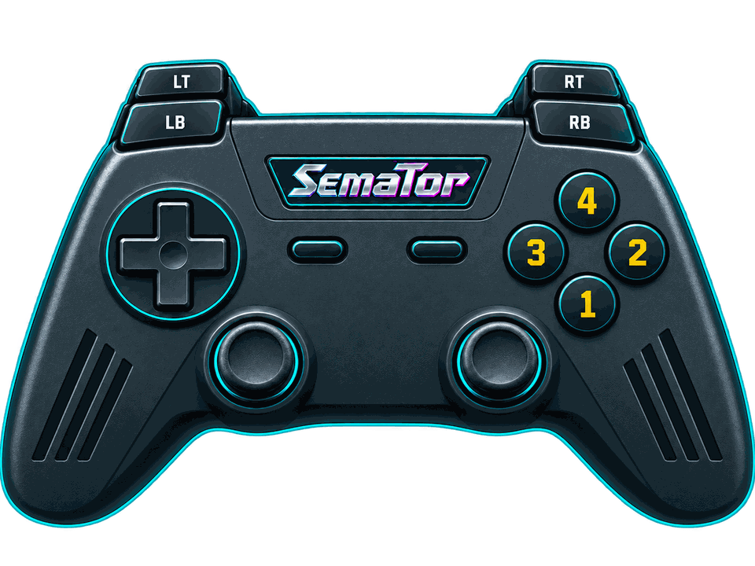

WIDER VIEW
16:9. The landscape, enemies and pickups beyond the screen edge are drawn by the game's own routines from its own map; enemies arrive at the new edge; the score bar and bottom panel keep their width
Sensible Software's colour-collecting shooter, converted to the ST by Peter Johnson. Paint the grey world back to life with the help of Catellite.
Left / right spins Wizball; fire shoots. Hold fire to steer Catellite. Waggle left-right to take the highlighted power-up. Space pauses; Q while paused quits. High-score names are typed on the keyboard.

Select a button to see its action.
Hover or tap a control to see what it does in this game. Face buttons 1–4 are south, east, west and north - A, B, X and Y on most pads, whatever your pad prints on them.
| Control | Action |
|---|---|
| Move (joystick) | |
| Move (joystick) | |
| Fire | |
| Fire | |
| Space | |
| Space | |
| Unassigned | |
| Fire | |
| Unassigned | |
| Unassigned | |
| Session menu (F11) | |
| SemaTor settings (F12) | |
| Unassigned axis / click | |
| Left stick click / Guide / extra buttons | Unassigned by default. Device or system Guide behaviour can vary. |
Default keyboard joystick mapping: arrow keys move, Left Ctrl fires and Space sends the original Space key. Original game keys remain available.
These are release defaults, not your saved remaps. Open F11 → Controls for the live mappings and to change them. Start and Back remain reserved for SemaTor menus. Mouse speed is adjustable. One active host gamepad is supported; two-player modes do not imply two simultaneous gamepads.
Names match the release profiles, including experimental and practice options. Switch them on under F12 → Enhancements while the game runs; experimental ones are marked.
16:9. The landscape, enemies and pickups beyond the screen edge are drawn by the game's own routines from its own map; enemies arrive at the new edge; the score bar and bottom panel keep their width
21:9 version of the wider view
The hills behind the landscape drift at a quarter of the landscape's speed, as distant hills would, instead of standing still
A soft shadow on the ground under the Wizball, the Catellite and each enemy, smaller and fainter the higher it is
With a wider view: the score bar's and bottom panel's plain lines carry on into the wings, so the picture reads as one screen
A soft edge where the hills, stumps and domes meet the sky and the backdrop; the sprites, text and panels stay sharp
When a colour is painted back into the level it fades in over half a second instead of popping; the game's flashes stay instant
While an enemy explodes, the landscape and the backdrop round it catch a warm light that spreads and fades with the explosion; the sprites and panels are not lit
The Wizball art pack: new panoramas, ground, a twinkling sky and the galaxy behind the landscape, in colours that come back as you paint the level. The pack is shared on the SemaTor Discord (F12 > Advanced > Get add-ons on Discord); unpack it into SemaTor's Add-ons folder. "No pack" means it was not found
The art pack's own tune for each level, played on a second, virtual YM2149 beside the ST's own chip - the game's sound effects and title music are untouched. Plays while you are in a level. Needs the Wizball art pack (SemaTor Discord)
In-between frames drawn by the game's own routines: the landscape, the Wizball, the Catellite and every enemy move between the game's 25 steps a second, at your screen's rate. The game itself is unchanged
With SMOOTH MOTION: the landscape and backdrop move in steps finer than a pixel, so slow scrolling glides instead of stepping; the sprites stay sharp
Losing a life no longer reduces the count
Anything that hits Wizball explodes instead, like a permanent shield
New games start with antigrav, two-way fire and the second shot, kept after every death
New games start with 9 lives instead of 4
Every tube leads somewhere from the start; unvisited levels start like level 1
Once collected, the shield stays until it has absorbed its hits
Each colour stage needs half the paint
Pause with Space, then press C to fill this level's colour cauldron
Android and dual-screen controls remain in testing. Touch layouts can differ from desktop gamepad defaults. Mega lo Mania’s Thor panel and direct-touch input need device validation; this guide does not certify every touch layout.